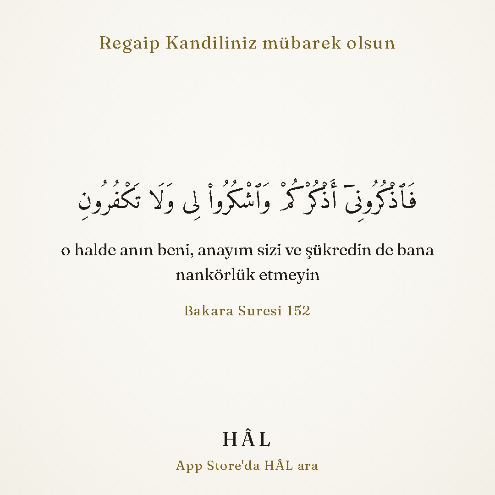
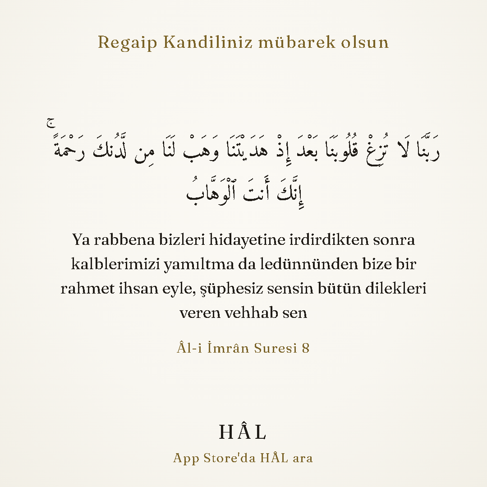
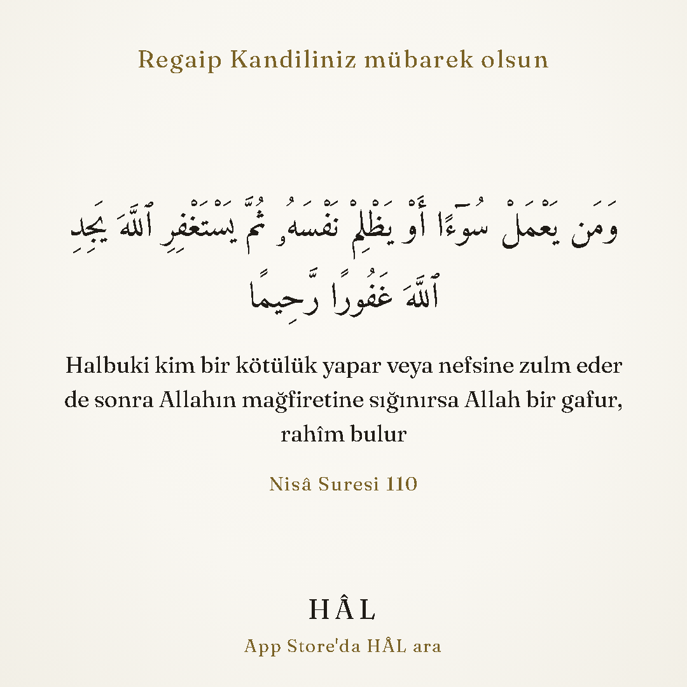
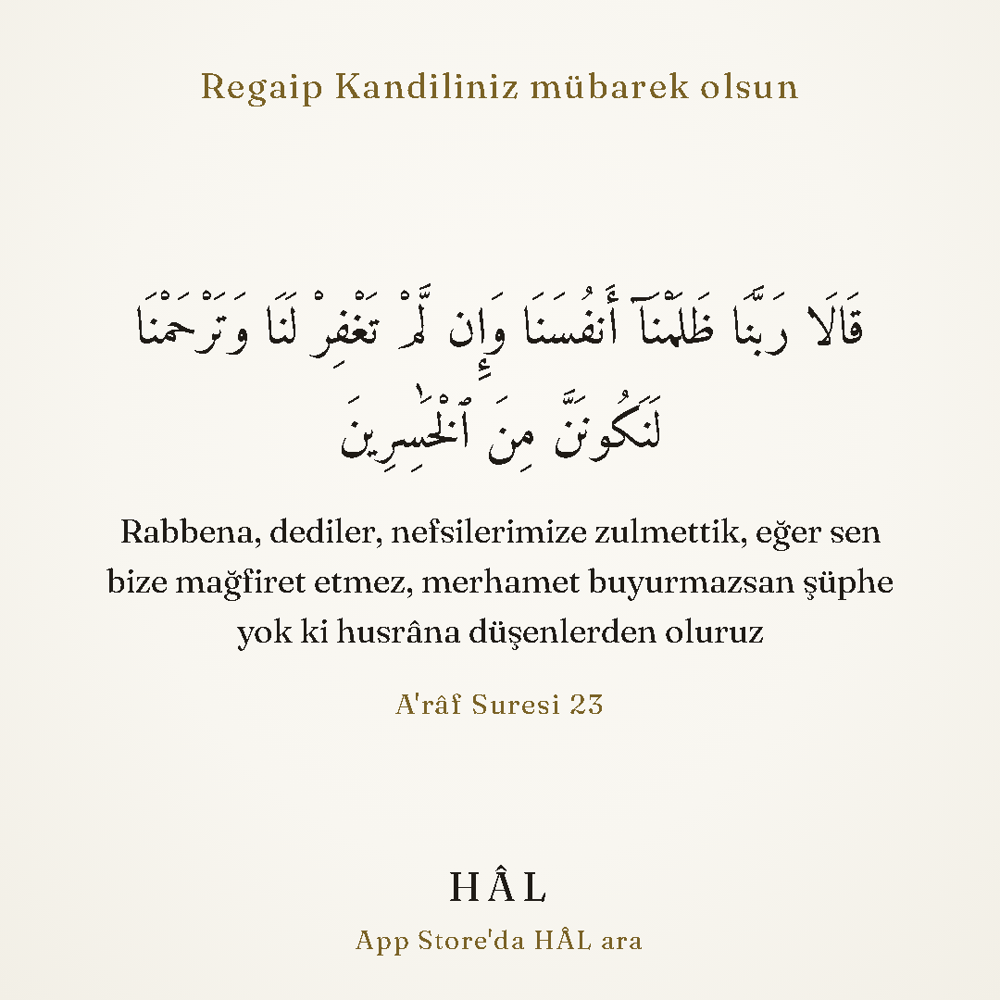
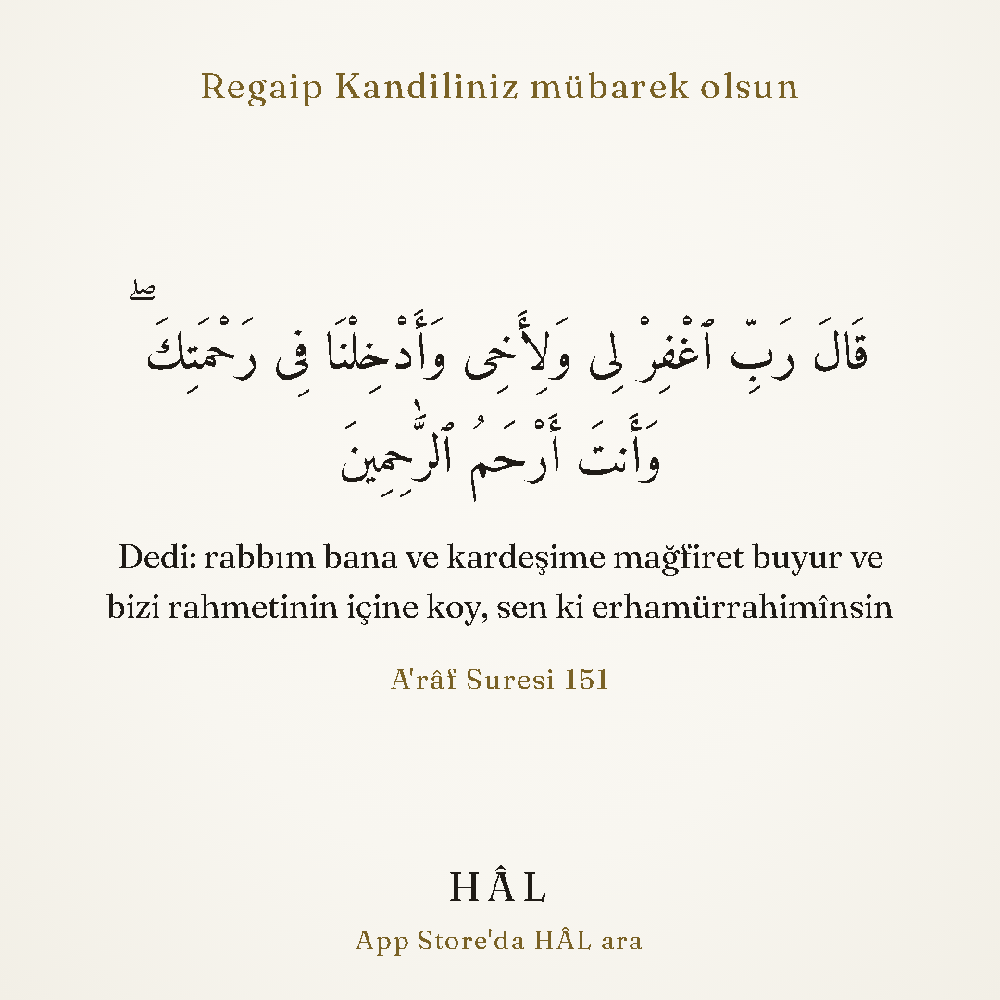
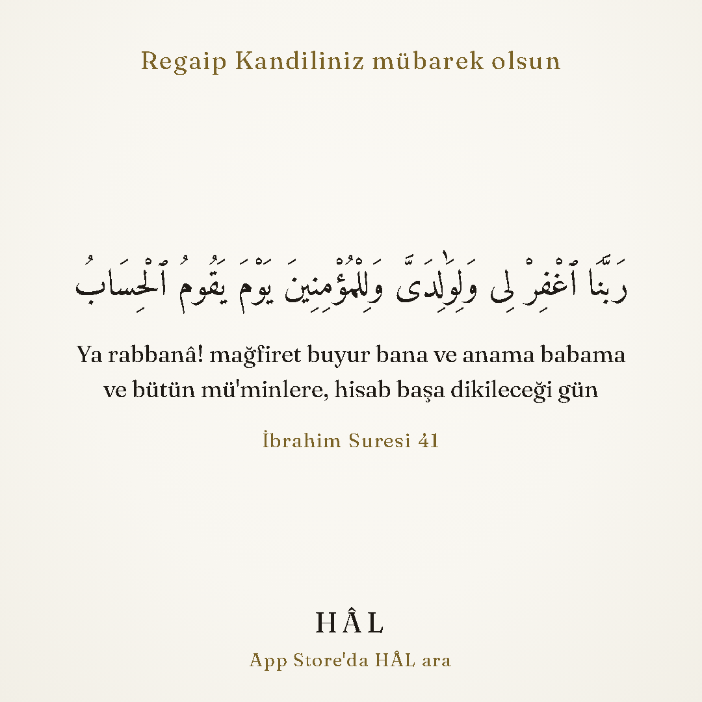
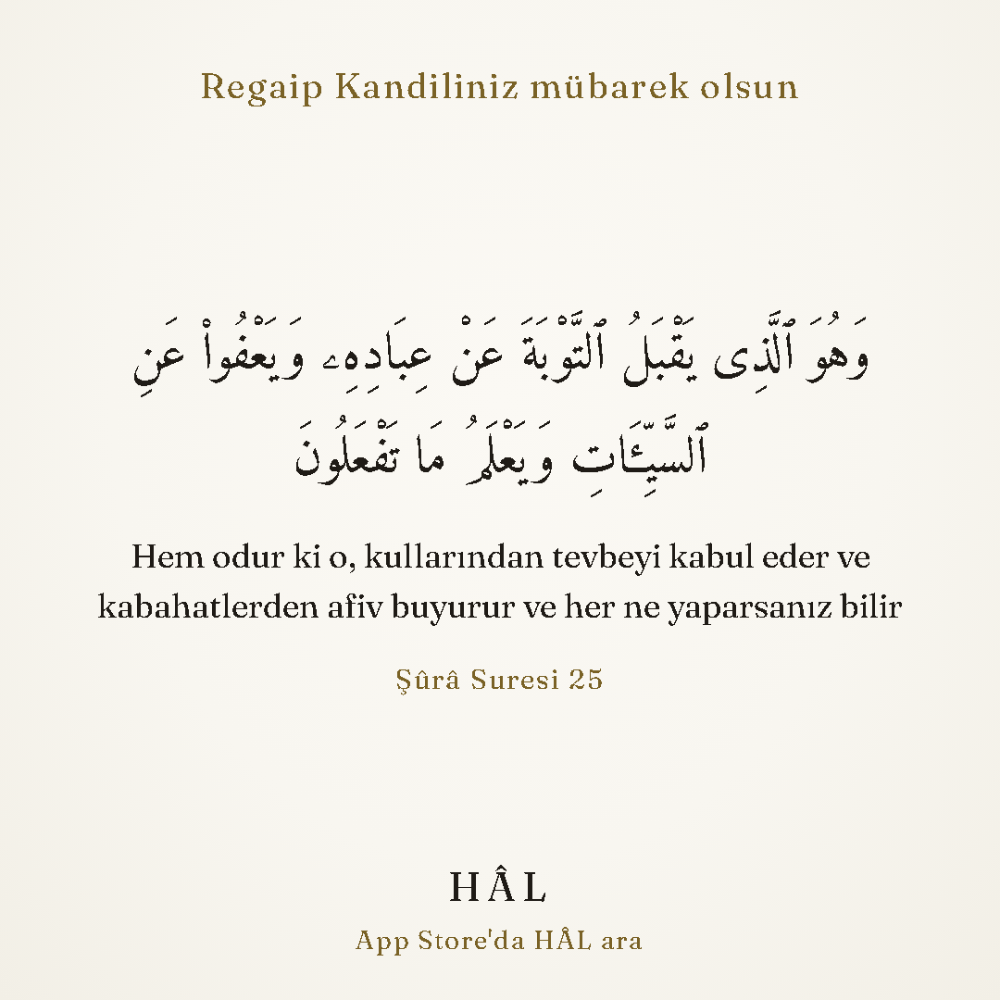
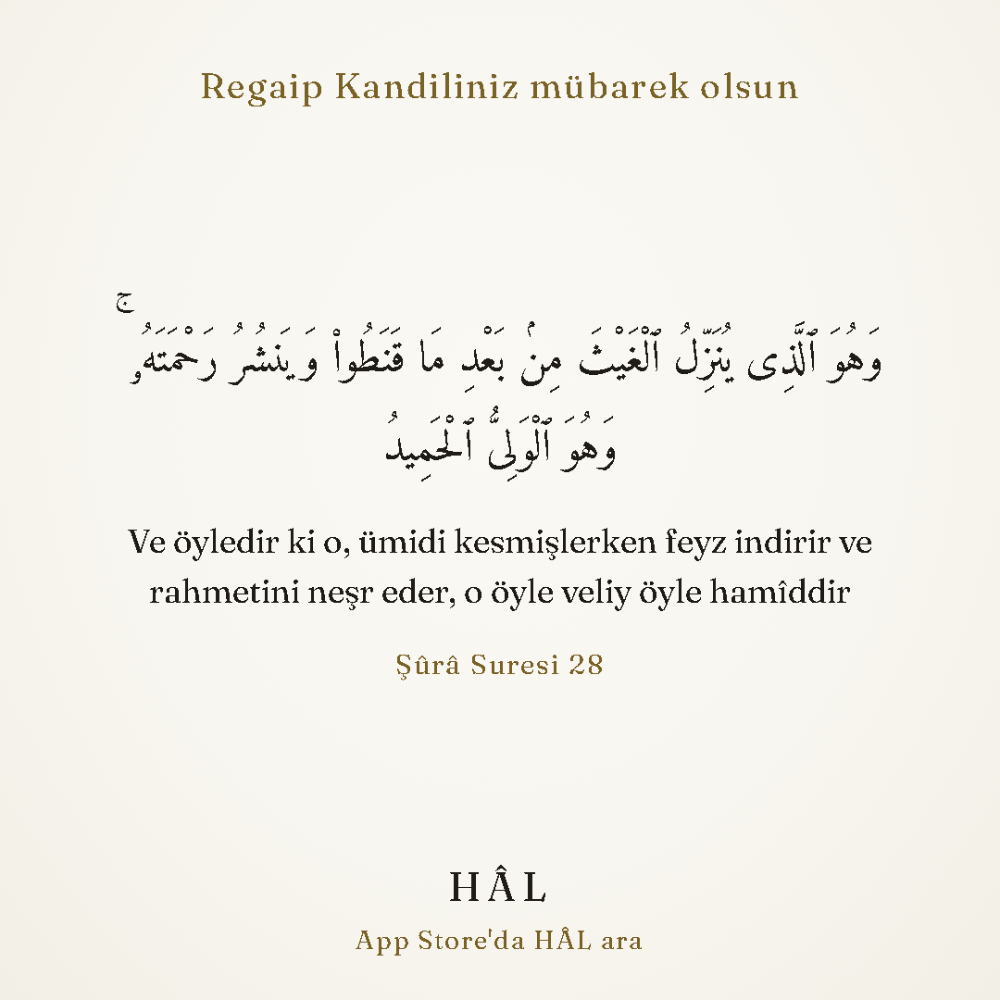

Ayetli Regaip Kandili mesajları
Regaip Kandili: 10 Aralık 2026 Perşembe akşamı (Diyanet takvimi). Rahmet, bağışlanma, dua ve yakınlık üzerine ayetleri Arapçası ve Elmalılı mealiyle sevdiklerine gönder. Görseli indir ya da doğrudan WhatsApp'ta paylaş.
















Hâline uygun ayet ve dualar, HÂL uygulamasında Arapçası, okunuşu, meali ve kaynağıyla bir arada.
Arapça: Tanzil Uthmani (tanzil.net, CC BY 3.0, değiştirilmeden). Meal: Elmalılı Hamdi Yazır, Hak Dini Kur'an Dili, Eser Neşriyat 1979. Kandil tarihi: Diyanet takvimi. HÂL bir tefsir ya da fetva kaynağı değildir; dini hüküm vermez. Amacı, günün içinde kısa bir an durup okumana eşlik etmektir.